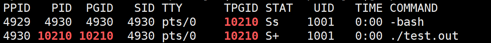

进程概念
概念
定义： 进程是程序的一个执行实例，是一个正在执行的程序。
进程管理： 在操作系统中，进程的一系列信息被封装到 PCB(Process Control Block) 中，操作系统就通过管理这些 PCB 来对进程进行管理。在 Linux 下 PCB 是一个被命名为 task_struct 的结构体。Linux 用 task_struct 来描述进程的各种状态、记录进程的各种信息。
task_struct 的基本内容：
- PID(Process ID)：用于标识进程，在操作系统中每个进程的 ID 都是不同的。
- 进程当前的状态：标识当前进程运行状态。
- 优先级：决定该进程被 CPU 调度的优先级。
- 程序计数器：程序中即将被执行的下一条指令的地址。
- 内存指针：包括程序代码和进程相关数据的指针，还有和其他进程共享的内存块的指针。
- ....
在 Linux 内核中会有进程队列，以链表的方式组织起来，来管理内存中的进程。所以在操作系统视角，进程 就是 对应可执行程序 + 进程 PCB。
查看进程信息
查看进程
我们可以通过 ps 命令来直接查看进程。语法：
常用选项：
-a：显示所有进程
-u: 显示详细信息
-x: 显示没有控制终端的进程
一般我们用 ps -aux 或 ps -ajx 来显示所有进程信息，并用行过滤 grep 快速获取目标进程的信息。
显示的信息的部分含义如下：
查看 PID
获取进程的 PID 除了上面使用 ps 命令外，还可以程序中使用下述系统调用:
#include <sys/types.h>
#include <unistd.h>
pid_t getpid(void); // 获取当前进程 PID
pid_t getppid(void); // 获取当前进程的父进程 PID
创建进程
在Linux中创建一个进程的方式有两种：
- 启动一个可执行程序。
- 通过代码创建一个进程。
而一个进程一般都是通过父进程创建的。我们启动的可执行程序的父进程都是命令行解释器 -bash。
我们在命令行中运行下述程序，通过ps命令来查看对应进程。
#include <stdio.h>
#include <sys/types.h>
#include <unistd.h>
int main()
{
while(1)
{
printf("my pid is :%d\n",getpid());
sleep(2);
}
return 0;
}
我们可以使用行过滤命令grep在进程列表中查找对应pid找到对应进程，如下

这个我们创建的test.out的进程ppid就是-bash外壳程序的pid，证明该程序是-bash的子进程。
代码创建进程
用代码创建进程就要使用库函数fork()，它在头文件 <unistd.h> 中。
fork()函数会创建一个子进程，如果成功创建，会在父进程中返回子进程的pid，在子进程中返回0；如果创建失败，会返回-1。
所以在fork()后一般要加一个判断，来区分父子进程，来完成不同的任务。下面是fork使用的一般代码。
那么fork是怎么为我们创建的子进程呢？
首先我们在fork函数执行前，父进程的可执行程序已经加载到内存中，并且创建了对应的task_struct，来维护这个内存空间。
fork函数所做的就是，以父进程的task_struct为模板，创建子进程的task_struct，其中内存指针，程序计数器等都是相同的。这也就解释了为什么子进程会和父进程一起从fork函数后开始运行。
并且它们是共享数据和代码的，也就是说子进程不会再重新拷贝一份代码和数据到内存中。
但是如果数据是共享的，那 id 会在父子进程中有不同的值呢？这里操作系统是用写时拷贝来实现的，就是当子进程对某个与父进程共享的变量进行写入时，操作系统就会重新开辟一片空间，将对应变量值拷贝过去，让子进程去修改拷贝出的变量，从而实现父子进程的数据不互相干扰。